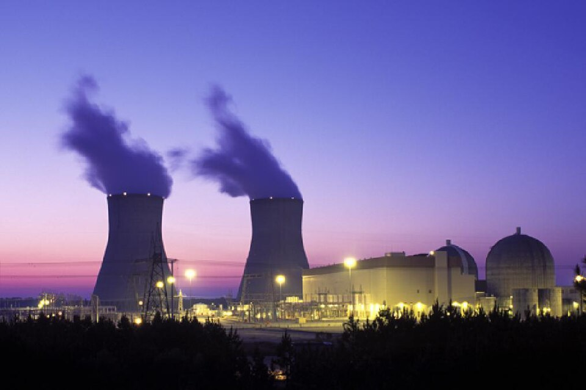

Advanced nuclear environments require exceptionally pure inorganic compounds to safely and efficiently control reactivity and radioprotection. Noah Chemicals provides incredibly precise chemical shims, such as Boric Acid for continuous uniform neutron absorption, high-density Barium Sulfate for impenetrable gamma shielding, and highly engineered Surrogate Waste Feeds for advanced vitrification modeling.

To ensure uncompromising safety and uniform reactivity thresholds, we distribute exact-tolerance inorganic predecessors utilized across testing simulators and active SMR grids globally.
Boric Acid serves as the premier soluble neutron absorber (chemical shim) inside pressurized water reactors. Leveraging the exceptionally high thermal neutron cross-section probability of the Boron-10 isotope, our strictly pure boric acid dissolves uniformly directly into the primary coolant. This permanently eliminates localized reactivity "hot spots" historically generated by physical, solid control rods.
Primarily utilized as a heavy aggregate in radioprotective concrete infrastructure. Barium Sulfate provides aggressive attenuation of gamma radiation through its immense specific gravity maximizing electron scattering, while the elevated atomic number (Z=56) radically accelerates the photoelectric effect to completely absorb high-energy gamma-ray photons before they breach human containment barriers.
We synthesize ultra-precise, non-radiological elemental mimics (utilizing specifically formulated simulants) designed exclusively for advanced reprocessing and waste vitrification structural testing at isolated National Laboratory scale environments.
Unlike fixed physical control rods, our high-purity Boric Acid is fully dissolved into the primary coolant loop. This generates an unvarying, perfectly uniform field of dispersed Boron-10 thermal neutron absorbers, ensuring total spatial dominance over reactivity rates.
Yes. Due to the extreme safety requirements of SMRs and legacy sites, we mandate 100% trace-metal lot traceability via full analytical Certificate of Analysis (CoA) documentation generated continually by our internal ICP-OES validation lab for every shipment.
Absolutely. We actively partner with tier-1 energy agencies executing proprietary catalyst formulas, surrogate liquid waste blends, and dense shielding models under strict, legally binding Non-Disclosure Agreements (NDAs).